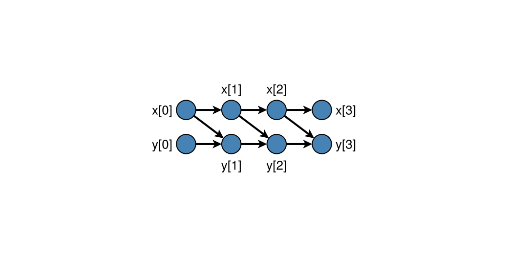
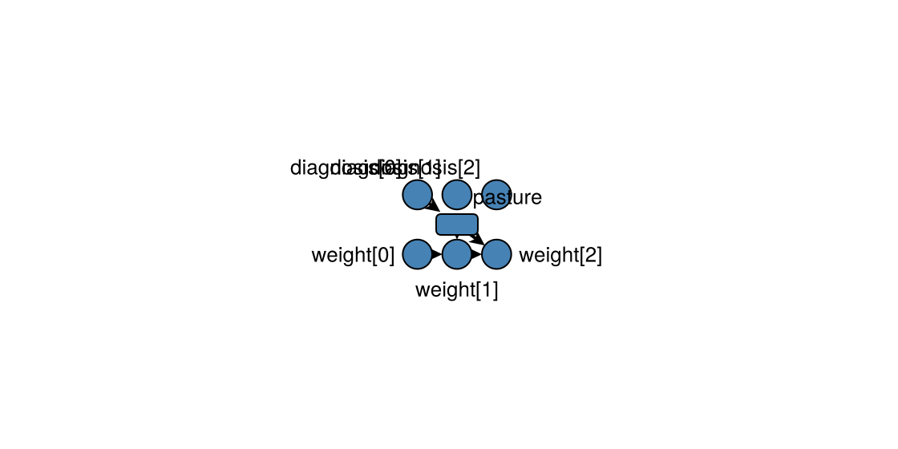

Time-indexed graphs
Discrete-time CDMs often share a time-invariant lag structure. Unroll that structure to a static DAG over occasions t = 0:T, then apply standard identification on the unrolled graph. Enduring entity attributes remain single nodes and may be assigned at an explicit onset time.
CausalDynamics.LaggedEdge — Type
LaggedEdge(parent, child, lag)Directed edge from parent at the occasion child_time - lag to child.
For an enduring child, child_time is its onset_time; for an enduring parent, the edge is emitted to every active occasion of the child.
CausalDynamics.TemporalNodeSpec — Type
TemporalNodeSpec(name; temporal_mode=:occasion, causal_role=nothing, onset_time=0)Describe one variable in a TemporalDAGSpec.
temporal_mode is either :occasion or :enduring. Occasion variables have one node at every active time; enduring variables have one node whose value is available from onset_time onwards. causal_role is descriptive metadata and does not affect identification.
CausalDynamics.TemporalDAGSpec — Type
TemporalDAGSpec(; entity, nodes, edges)Time-invariant temporal graph specification over TemporalNodeSpecs.
entity is an optional display label. Every node must have a unique name.
CausalDynamics.TemporalUnrolling — Type
Result of unrolling a TemporalDAGSpec over occasions 0:T.
CausalDynamics.unroll_temporal_dag — Function
unroll_temporal_dag(spec, T)Unroll spec over occasions t = 0:T.
Enduring variables contribute one node. An occasion-to-enduring edge is an assignment into persistence: with enduring child onset a, lag ℓ connects parent[a - ℓ] to the enduring node.
CausalDynamics.temporal_node — Function
temporal_node(unrolling, variable, t)Return the node for variable at occasion t. Enduring variables resolve to their single node once active at t.
CausalDynamics.enduring_node — Function
Return the node index for an enduring variable.
CausalDynamics.temporal_node_label — Function
Return a human-readable label for an unrolled node index.
CausalDynamics.temporal_edge_role — Function
temporal_edge_role(unrolling, parent, child) -> SymbolClassify an edge in a temporal unrolling as :constitutive when its child is an enduring node, :recurrent_influence when an enduring node points to an occasion, or :occasion_influence otherwise. The classification is derived from temporal identity and does not alter the graph used for identification.
CausalDynamics.temporal_edge_records — Function
temporal_edge_records(unrolling) -> Vector{NamedTuple}Return serialisable provenance records for every edge in a temporal unrolling. Each record contains the source and target temporal keys and the derived role returned by temporal_edge_role.
CausalDynamics.d_separated_temporal — Function
Apply d-separation to two nodes in an unrolled temporal graph.
CausalDynamics.temporal_backdoor_adjustment_set — Function
Return a backdoor adjustment set of node indices for a temporal query.
CausalDynamics.temporal_backdoor_adjustment_nodes — Function
Return a temporal backdoor adjustment set as (variable, time) pairs.
Enduring attributes (#29)
using CausalDynamics, Graphs
spec = TemporalDAGSpec(
entity = :sheep,
nodes = [
TemporalNodeSpec(:diagnosis),
TemporalNodeSpec(:pasture; temporal_mode = :enduring, onset_time = 1, causal_role = :assigned),
TemporalNodeSpec(:weight),
],
edges = [
(:diagnosis, :pasture, 1),
(:pasture, :weight, 0),
(:weight, :weight, 1),
],
)
u = unroll_temporal_dag(spec, 2)
nv(u.graph), temporal_node_label(u, enduring_node(u, :pasture))(7, "pasture")Panel mapping follows the mode: enduring variables keep their bare column symbol; occasion variables use panel_column_name. Prefer declaring temporal_mode on the DAG rather than a downstream unit_level override.
The unrolled graph retains edge provenance. Use temporal_edge_role for one edge and temporal_edge_records for an auditable inventory. A constitutive edge forms an enduring node from earlier occasions; a recurrent influence edge reuses an enduring node as a parent of later occasions; an occasion influence edge connects time-indexed nodes. These roles describe the temporal semantics of the graph and do not add a second causal system alongside it.
records = temporal_edge_records(u)
filter(record -> record.role === :constitutive, records)1-element Vector{NamedTuple{(:parent, :child, :role)}}:
(parent = (:diagnosis, 0), child = (:pasture, nothing), role = :constitutive)Plotting an unrolling
With DAGMakie.jl loaded, DAGMakie.dagplot_temporal places occasions left→right and variables as rows. Occasion nodes are circles; enduring nodes are rounded rectangles placed at their onset_time (shape encodes persistence; colour still encodes causal role). The CausalDynamics extension adds a TemporalUnrolling method automatically.
using CausalDynamics, DAGMakie, CairoMakie
spec = TemporalDAGSpec(
nodes = [TemporalNodeSpec(:x), TemporalNodeSpec(:y)],
edges = [(:x, :x, 1), (:y, :y, 1), (:x, :y, 1)],
)
u = unroll_temporal_dag(spec, 3)
fig, ax, p = dagplot_temporal(u;
figure_size = (520, 260),
fit_node_size_to_labels = false,
node_size = 28,
)
fig
using CausalDynamics, DAGMakie, CairoMakie
spec = TemporalDAGSpec(
entity = :sheep,
nodes = [
TemporalNodeSpec(:diagnosis),
TemporalNodeSpec(:pasture; temporal_mode = :enduring, onset_time = 1, causal_role = :assigned),
TemporalNodeSpec(:weight),
],
edges = [
(:diagnosis, :pasture, 1),
(:pasture, :weight, 0),
(:weight, :weight, 1),
],
)
u = unroll_temporal_dag(spec, 2)
fig, ax, p = dagplot_temporal(u;
figure_size = (560, 280),
fit_node_size_to_labels = false,
node_size = 26,
)
fig
Confounded treatment (book Ch. 28)
using CausalDynamics
spec = TemporalDAGSpec(
nodes = [TemporalNodeSpec(v) for v in [:x, :y, :a, :c]],
edges = [
(:c, :c, 1), (:a, :c, 1), (:c, :a, 0), # confounder dynamics + confounding
(:x, :x, 1), (:a, :x, 1), (:c, :x, 1), # state evolution
(:x, :y, 0), # measurement
],
)
u = unroll_temporal_dag(spec, 10)
# Effect of A_{t-1} on X_t: adjust for C_{t-1}
adj = temporal_backdoor_adjustment_nodes(u, :a, 2, :x, 2)
# Set containing (:c, 1)See also Utilities, Discrete-time CDMs, and the CDCS book Ch. 28.
Baseline assignment into an enduring attribute
An occasion can assign a value that persists thereafter. With an enduring node onset at t = 1, a lag-one edge from diagnosis connects diagnosis[0] to the single pasture node:
spec = TemporalDAGSpec(
entity = :sheep,
nodes = [
TemporalNodeSpec(:diagnosis),
TemporalNodeSpec(:pasture; temporal_mode = :enduring, onset_time = 1),
TemporalNodeSpec(:weight),
],
edges = [
(:diagnosis, :pasture, 1),
(:pasture, :weight, 0),
],
)
u = unroll_temporal_dag(spec, 4)
temporal_node(u, :diagnosis, 0)
enduring_node(u, :pasture)